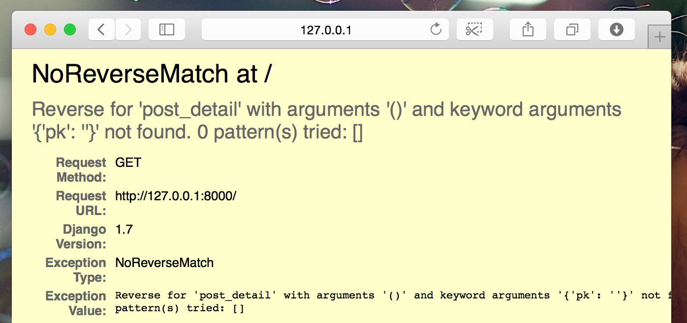

Extend your application
We've already completed all the different steps necessary for the creation of our website: we know how to write a model, URL, view and template. We also know how to make our website pretty.
Time to practice!
The first thing we need in our blog is, obviously, a page to display one post, right?
We already have a
Post
model, so we don't need to add anything to
models.py
.
Create a template link to a post's detail
We will start with adding a link inside
blog/templates/blog/post_list.html
file. Open it in the code editor, and so far it should look like
this:
blog/templates/blog/post_list.html
{% extends 'blog/base.html' %}
{% block content %}
{% for post in posts %}
<article class="post">
<time class="date">
{{ post.published_date }}
</time>
<h2><a href="">{{ post.title }}</a></h2>
<p>{{ post.text|linebreaksbr }}</p>
</article>
{% endfor %}
{% endblock %}
We want to have a link from a post's title in the post list to the
post's detail page. Let's change
<h2><a href="">{{ post.title }}</a></h2>
so that it links to the post's detail page:
blog/templates/blog/post_list.html
<h2><a href="{% url 'post_detail' pk=post.pk %}">{{ post.title }}</a></h2>
Time to explain the mysterious
{% url 'post_detail' pk=post.pk %}
. As you might suspect, the
{% %}
notation means that we are using Django template tags. This time we
will use one that will create a URL for us!
The
post_detail
part means that Django will be expecting a URL in
blog/urls.py
with
name=post_detail
.
And how about
pk=post.pk
?
pk
is short for primary key, which is a unique identifier for each
record in a database. Every Django model has a field which serves as
its primary key, and whatever other name it has, it can also be
referred to as "pk". Because we didn't specify a primary key in our
Post
model, Django creates one for us (by default, a field named "id"
holding a number that increases for each record, i.e. 1, 2, 3) and
adds it as a field to each of our posts. We access the primary key
by writing
post.pk
, the same way we access other fields (
title
,
author
, etc.) in our
Post
object!
Now when we go to
http://127.0.0.1:8000/
we will have an error (as expected, since we do not yet have a URL
or a
view
for
post_detail
). It will look like this:

Create a URL to a post's detail
Let's create a URL in
urls.py
for our
post_detail
view
!
We want our first post's detail to be displayed at this URL : http://127.0.0.1:8000/post/1/
Let's make a URL in the
blog/urls.py
file to point Django to a
view
named
post_detail
, that will show an entire blog post. Open the
blog/urls.py
file in the code editor, and add the line
path('post/<int:pk>/', views.post_detail,
name='post_detail'),
so that the file looks like this:
blog/urls.py
from django.urls import path
from . import views
urlpatterns = [
path('', views.post_list, name='post_list'),
path('post/<int:pk>/', views.post_detail, name='post_detail'),
]
This part
post/<int:pk>/
specifies a URL pattern – we will explain it for you:
-
post/means that the URL should begin with the word post followed by a / . So far so good. -
<int:pk>– this part is trickier. It means that Django expects an integer value and will transfer it to a view as a variable calledpk. -
/– then we need a / again before finishing the URL.
That means if you enter
http://127.0.0.1:8000/post/5/
into your browser, Django will understand that you are looking for a
view
called
post_detail
and transfer the information that
pk
equals
5
to that
view
.
OK, we've added a new URL pattern to
blog/urls.py
! Let's refresh the page:
http://127.0.0.1:8000/
Boom! The server has stopped running again. Have a look at the
console – as expected, there's yet another error!
command-line
return _bootstrap._gcd_import(name[level:], package, level)
File "<frozen importlib._bootstrap>", line 1030, in _gcd_import
File "<frozen importlib._bootstrap>", line 1007, in _find_and_load
File "<frozen importlib._bootstrap>", line 986, in _find_and_load_unlocked
File "<frozen importlib._bootstrap>", line 680, in _load_unlocked
File "<frozen importlib._bootstrap_external>", line 850, in exec_module
File "<frozen importlib._bootstrap>", line 228, in _call_with_frames_removed
File "/Users/ola/djangogirls/blog/urls.py", line 6, in <module>
path('post/<int:pk>/', views.post_detail, name='post_detail'),
AttributeError: module 'blog.views' has no attribute 'post_detail'
Do you remember what the next step is? It's adding a view!
Add a post's detail view
This time our
view
is given an extra parameter,
pk
. Our
view
needs to catch it, right? So we will define our function as
def post_detail(request, pk):
. Note that this parameter must have the exact same name as the one
we specified in
urls
(
pk
). Also note that omitting this variable is incorrect and will
result in an error!
Now, we want to get one and only one blog post. To do this, we can use querysets, like this:
blog/views.py
Post.objects.get(pk=pk)
But this code has a problem. If there is no
Post
with the given
primary key
(
pk
) we will have a super ugly error!

We don't want that! But luckily Django comes with something that
will handle that for us:
get_object_or_404
. In case there is no
Post
with the given
pk
, it will display much nicer page, the
Page Not Found 404
page.

The good news is that you can actually create your own
Page not found
page and make it as pretty as you want. But it's not super important
right now, so we will skip it.
OK, time to add a
view
to our
views.py
file!
In
blog/urls.py
we created a URL rule named
post_detail
that refers to a view called
views.post_detail
. This means that Django will be expecting a view function called
post_detail
inside
blog/views.py
.
We should open
blog/views.py
in the code editor and add the following code near the other
from
lines:
blog/views.py
from django.shortcuts import render, get_object_or_404
And at the end of the file we will add our view :
blog/views.py
def post_detail(request, pk):
post = get_object_or_404(Post, pk=pk)
return render(request, 'blog/post_detail.html', {'post': post})
Yes. It is time to refresh the page: http://127.0.0.1:8000/

It worked! But what happens when you click a link in blog post title?

Oh no! Another error! But we already know how to deal with it, right? We need to add a template!
Create a template for the post details
We will create a file in
blog/templates/blog
called
post_detail.html
, and open it in the code editor.
Enter the following code:
blog/templates/blog/post_detail.html
{% extends 'blog/base.html' %}
{% block content %}
<article class="post">
{% if post.published_date %}
<time class="date">
{{ post.published_date }}
</time>
{% endif %}
<h2>{{ post.title }}</h2>
<p>{{ post.text|linebreaksbr }}</p>
</article>
{% endblock %}
Once again we are extending
base.html
. In the
content
block we want to display a post's published_date (if it exists),
title and text. But we should discuss some important things, right?
{% if ... %} ... {% endif %}
is a template tag we can use when we want to check something.
(Remember
if ... else ...
from
Introduction to Python
chapter?) In this scenario we want to check if a post's
published_date
is not empty.
OK, we can refresh our page and see if
TemplateDoesNotExist
is gone now.

Yay! It works!
Deploy time!
It'd be good to see if your website still works on PythonAnywhere, right? Let's try deploying again.
command-line
$ git status
$ git add .
$ git status
$ git commit -m "Added view and template for detailed blog post as well as CSS for the site."
$ git push
Then, in a PythonAnywhere Bash console :
PythonAnywhere command-line
$ cd ~/<your-pythonanywhere-domain>.pythonanywhere.com
$ git pull
[...]
(Remember to substitute
<your-pythonanywhere-domain>
with your actual PythonAnywhere subdomain, without the
angle-brackets.)
Updating the static files on the server
Servers like PythonAnywhere like to treat "static files" (like CSS
files) differently from Python files, because they can optimise for
them to be loaded faster. As a result, whenever we make changes to
our CSS files, we need to run an extra command on the server to tell
it to update them. The command is called
collectstatic
.
Start by activating your virtualenv if it's not still active from
earlier (PythonAnywhere uses a command called
workon
to do this, it's just like the
source myenv/bin/activate
command you use on your own computer):
PythonAnywhere command-line
$ workon <your-pythonanywhere-domain>.pythonanywhere.com
(ola.pythonanywhere.com)$ python manage.py collectstatic
[...]
The
manage.py collectstatic
command is a bit like
manage.py migrate
. We make some changes to our code, and then we tell Django to
apply
those changes, either to the server's collection of static files, or
to the database.
In any case, we're now ready to hop on over to the "Web" page (from the menu button in the upper right of the console) and hit Reload , and then look at the https://subdomain.pythonanywhere.com page to see the result.
And that should be it. Congrats! :)